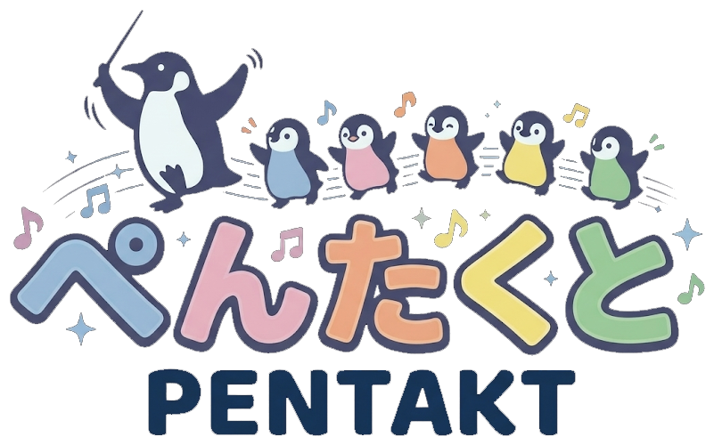
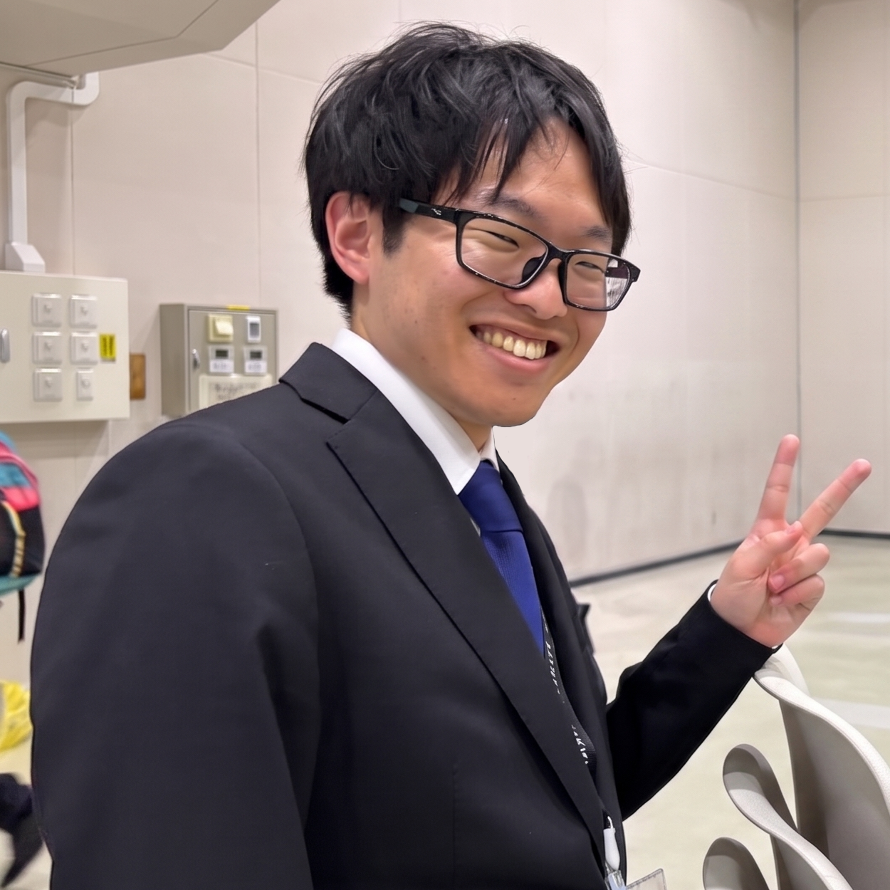
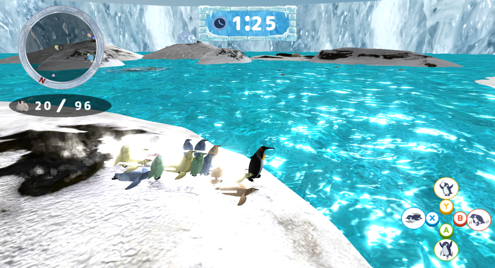
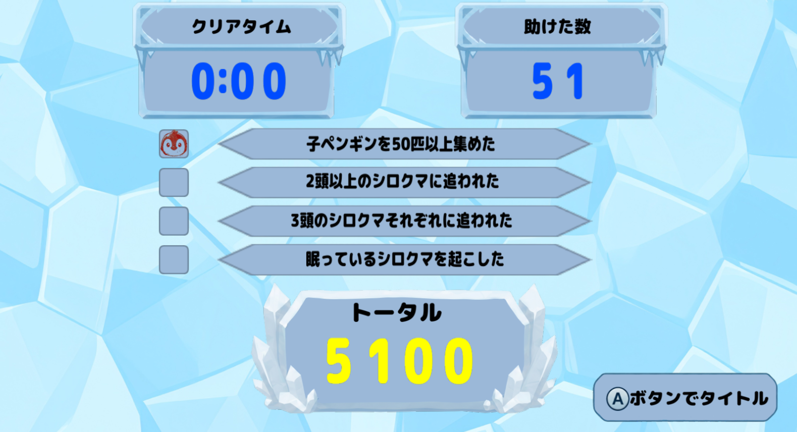
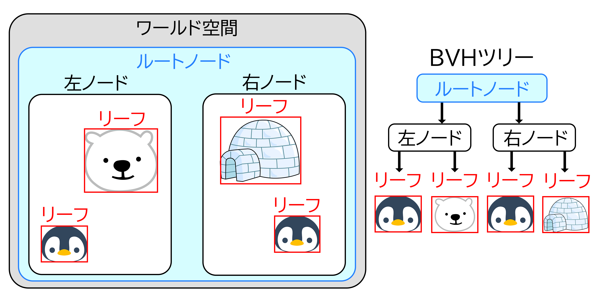
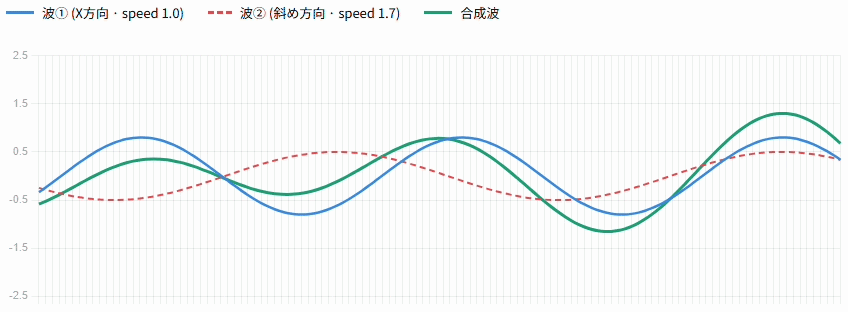
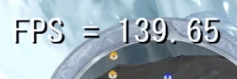
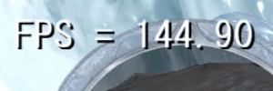

本校に入学する前は、3年間溶接工として働いておりました。
将来のキャリアを考えたとき、やはり好きなことを仕事にしたいと考え、ゲームプログラマーを目指すようになりました。
趣味 : ドライブ、旅行
特技 : 溶接
休日の過ごし方 : 積みゲーの消化、ネッ友とゲーム
好きなゲームジャンル : MMO、FPS、RPG、謎解き、サンドボックス、レース
最近遊んだゲーム : ぽこあポケモン、ドラゴンクエストVII Reimagined、サブノーティカ2、REPO
長所 :
| 項目 | 内容 |
|---|---|
| タイトル | ぺんたくと |
| 制作人数 | 4人 |
| 製作期間 | 2026年2月～現在 |
| ゲームジャンル | 3Dアクション |
| プレイ人数 | 1 |
| 対応ハード | PC (Windows 11) / Xbox コントローラー |
| 使用言語 | C++ |
| エンジン | BeastEngine（学校内製エンジン（k2EngineLow） / DirectX12） |
| 使用ツール | Visual Studio 2026 Visual Studio CodeAdobe Photoshop 2026 3dsMax 2026 Effekseer GitHub Fork |
| GitHub URL | https://github.com/TakebayashiNaoya/ProjectBeast |
親ペンギンを操作し、制限時間内に子ペンギンを集めたり、アチーブメントを達成することで、ハイスコアを狙うゲームです。
個性的な子ペンギンたちに、煩わしさや可愛らしさを感じられるゲームを目指しました。


BulletPhysicsには、物理的に押し返さず重なりだけを検知する btGhostObject という仕組みがあります。
攻撃のダメージ判定や敵の索敵範囲など、「すり抜けるが、接触だけ検知したい」 処理にはこれが適しています。
しかし btGhostObject をゲームコードから直接扱うと、生成・破棄のタイミング管理や衝突属性のフィルタリング、判定後の通知といった処理をすべてバラバラに書く必要があり、コードが煩雑になることがわかりました。
そこで btGhostObject をラップし、これらをまとめて管理する GhostBody システムを自作しました。
また、GhostBody の形状として使用している CapsuleCollider / BoxCollider / SphereCollider / MeshCollider といったコライダークラスも自作していますが、これらはUnityの同名クラスを意識した命名にしています。
チームメンバーが役割をすぐに把握できるよう、あえて既存エンジンと揃えました。

すべての GhostBody 同士をO(n²)で調べると、オブジェクト数が増えたときに処理落ちしてしまいます。
そこで判定を2段階に分けました。
1段階目は 広域判定（Broadphase） で、BVH（Bounding Volume Hierarchy）の一種であるDynamic AABB Tree（btDbvt）を使って 「近くにいる可能性があるペア」 だけを絞り込みます。
各 GhostBody をAABBで包んでツリー構造に登録しておくことで、ツリーを再帰的に辿るだけで遠いペアをまとめて除外でき、O(n²)の総当たりを避けられます。
2段階目の詳細判定に進む前にも、両者の包含球（BoundingRadius）の半径の和と距離を比較して届いていなければ即スキップする早期リターンを挟み、重い計算が走るケースをさらに減らしています。
オブジェクトの種類が増えると「誰と誰が当たるか」の管理が煩雑になります。
これを解決するため、各 GhostBody に Attribute（自分の種別）と Mask（当たりたい相手の種別）をビットフラグで持たせました。
(a->GetMask() & b->GetAttribute()) && (b->GetMask() & a->GetAttribute()) という1行で相互フィルタリングが完結するようにし、新しい種別を追加しても既存の判定ロジックに手を加える必要がないようにしました。
GhostBody の生成タイミングと GhostBodyManager への登録タイミングがずれると、判定漏れやダングリングポインタの原因になります。
これを防ぐため、CreateCore() 内で GhostBodyManager::AddBody() を呼んで自動登録し、デストラクタで RemoveBody() を呼んで自動解除する設計にしました。
形状データも std::unique_ptr<IGhostShape> で保持し、形状を差し替えた際の古いメモリ解放も自動で行われるようにしました。
衝突判定のループ内でダメージ処理や座標変更を直接行うと、同一フレームで複数回ヒットが検出された際に処理の二重適用が起きるリスクがあります。
そこで GhostBodyManager 内では当たったペアの情報をコールバック（registerPairCallback_）として外部に通知するだけにとどめ、具体的な後処理は呼び出し側で行う設計にしました。
これにより判定フェーズと処理フェーズを明確に分離し、順序依存のバグが起きにくくしました。
キャラクターが壁や床と正しく衝突しながら移動できるよう、CharacterController を自作しました。
なお、CharacterController や内部で使用している CapsuleCollider / RigidBody / RaycastHit といったクラス名は、Unityの同名クラスを意識した命名にしています。チームメンバーがUnityの知識を持っていることが多いため、役割をすぐに把握できるよう、あえて既存エンジンと揃えました。
カプセル形状のコライダーと btRigidBody を組み合わせて物理空間に参加させており、移動の解決はすべて自前のロジックで行っています。

XZ平面の移動では、Sweep Test（形状を空間上でスライドさせてどこで衝突するかを調べる処理）を使って壁との接触を検出します。
壁に当たった場合は、移動ベクトルから壁の法線方向の成分を打ち消すことで、壁に沿ってスムーズに滑る動きを実現しています。
また、コーナーに挟まってキャラクターがスタックしないよう、この処理を複数回繰り返す反復スライディング解決を採用しています。
垂直方向は毎フレーム重力加速度を加算し、下向きにスイープテストを行うことで床への接地を判定します。
同様に上向きのスイープテストで天井との衝突も検出しており、ジャンプ中に天井に頭をぶつけると垂直速度がリセットされます。
また、SetSeaLevel() で海面の高さを渡すことで、キャラクターが海面より下に沈まないようにしています。
泳ぎ状態に切り替わると重力をOFFにし、波面の高さに追従する動きへとシームレスに切り替わります。
RequestTeleport() を呼ぶと、次の Execute() で衝突判定を一切行わずに目標座標へ瞬間移動します。
これにより、ステージの切り替えやリスポーン処理など、強制的に座標を変えたい場面でも安全に対応できるようにしました。
まず最初にフォワードレンダリングのみで実装しました。
しかし、ライトの数が増えると、画面に映っていないピクセルに対してもライティング計算が走るため、
将来的にライトが増えた際に処理が重くなるという問題がありました。
それを解決するために、後述するディファードレンダリングも実装しました。
また、フォワードとディファードを両方実装することでそれぞれの特性を比較・理解するという学習目的もありました。
フォワードレンダリングの問題を解決するため、またフォワードとの違いを学ぶため、ディファードレンダリングを実装しました。 ディファードレンダリングでは、まずジオメトリパスで各オブジェクトの情報を GBuffer に書き込みます。
| GBufferスロット | 内容 |
|---|---|
| アルベド | オブジェクトの色・深度 |
| 法線 | ワールド空間の法線ベクトル |
| メタリックスムース | PBRパラメータ（metallic / smooth / ライト倍率） |
その後、ライティングパスでGBufferを参照して画面全体に対して1回だけライティング計算を行います。
これにより、将来的にライトの数が増えても処理コストが抑えられます。
メタリックスムースの枠には、もともとスペキュラーマップを入れていましたが、後述するPBRに差し換えました。
ディファードレンダリングには半透明オブジェクトの描画が苦手という欠点があります。
GBufferは1ピクセルにつき1つの情報しか持てないため、複数の半透明レイヤーを正しく合成できません。
そこで、以下のようなハイブリッド構成にしました。
オブジェクトはそれぞれ m_deferredModelList / m_forwardModelList に振り分けられ、描画パスが切り替わります。
SetForwardRendering(true) を呼ぶことで、モデル単位でフォワード描画に切り替えることができるようにしました。
| PBRあり | PBRなし |
|---|---|
|
|
見た目のクオリティを上げるため、PBR（物理ベースレンダリング） を実装しました。
PBRは現実の光の物理法則に基づいてライティングを計算する手法です。
金属・非金属の質感を統一されたパラメータで表現できるため、リアルな見た目を実現することができました。
実装には以下のモデルを使用しています。
また、モデルごとに PBRParam を設定することで、ディレクションライト強度・環境光強度・metallicオフセット・smoothオフセットを個別に調整できるようにしました。
jsonを用いることで、プログラマー以外の方でも簡単に調整できるようにしています。
[
{
"name": "Dummy",
"comment1": "dirLightScale(0.0〜∞): ディレクションライト強度倍率 （直接光が完全に消える（影側と同じ明るさになる）、1.0：デフォルト（SceneLightで設定した色そのまま）、2.0以上：白飛びに注意）",
"dirLightScale": 1.0,
"comment2": "ambientScale(0.0〜∞): 環境光強度倍率 （0.0：環境光なし（影側が真っ黒になる）、1.0：デフォルト、大きくするほど：影側が明るくなりフラットな見た目に近づく）",
"ambientScale": 1.0,
"comment3": "metallicOffset(-1.0〜1.0): メタリックオフセット （低いほど：非金属的になり、鏡面反射が白に近づく、0.0：デフォルト、高いほど：金属的な見た目になり、鏡面反射がアルベドカラーに近づく）",
"metallicOffset": 0.0,
"comment4": "smoothOffset(-1.0〜1.0): スムーズオフセット （低いほど：表面が粗くなり拡散反射が支配的になる（雪・布的）、0.0：デフォルト、高いほど：表面が滑らかになり鏡面反射が鋭くなる（金属・水面的））",
"smoothOffset": 0.0
},
{
"name": "igloo",
"dirLightScale": 0.5,
"ambientScale": 1.5,
"metallicOffset": 1.0,
"smoothOffset": 1.0
}
]
| ブルームあり | ブルームなし |
|---|---|
 |
 |
見た目のクオリティをさらに上げるため、ブルームを実装しました。
これにより、海の鏡面反射がキラキラと輝いて見えるようになりました。
海のシェーダーでは、スペキュラ値をHDR（1.0を超える値）として出力し、ブルームとの相性を良くしています。
ブルームの種別は以下の2種類から切り替えられます。
| 種別 | 内容 |
|---|---|
| 通常ブルーム | 輝度テクスチャを1段ブラーして合成 |
| 川瀬式ブルーム | 解像度を段階的に半分に縮小しながら最大4段ブラーして平均合成。より広い発光表現が可能 |
ブラーの種別も平均ブラーとガウシアンブラーから選択できます。 ガウシアンブラーは中心に近いほど重みが大きく、より自然なぼけを実現します。

海はC++で動的にグリッドメッシュを生成し、頂点を波のように動かすことでリアルな海面を表現しています。
グリッドの分割数は 128×128 で、頂点数は約17,000個になります。
これらすべての頂点の波高さを毎フレームCPUで計算すると処理負荷が高くなるため、コンピュートシェーダーでGPU並列処理を行うようにしました。

波の計算は2本のsin波を重ねた式で行います。
スレッドグループは (8, 8, 1) でディスパッチし、各スレッドが1頂点の波高さを RWStructuredBuffer に書き出します。
CPUにReadbackした波高さキャッシュは、チャンクAABBの構築にも活用しています。
頂点シェーダー側でも同じ数式で波高さを計算し、隣接点との差分近似で法線を再構築しています。
海もjsonでパラメーター調整できるようにしています。
[
{
"baseReflectance": 0.0, // 基本反射率
"wave1Amplitude": 5.0, // 波①の振幅
"wave1Frequency": 0.025, // 波①の空間周波数
"wave2Amplitude": 2.0, // 波②の振幅
"wave2Frequency": 0.06, // 波②の空間周波数
"specularPower": 50.0, // スペキュラのPhong指数（大きいほどハイライトが絞られる）
"specularScale": 0.5, // スペキュラ強度の倍率（0.0で照り返しを消せる）
"ambientScale": 2.0 // 海専用アンビエント強度倍率（他オブジェクトに影響しない）
}
]

渦潮はUV座標を中心（0.5, 0.5）基点で毎フレーム回転させることで、渦が回って見えるアニメーションを実現しました。
また、渦潮自体も円形グリッドメッシュで構成されており、毎フレーム Ocean::SampleWaveHeight() を呼び出して、
海の波高さキャッシュを参照することで、渦潮メッシュの各頂点Y座標を海面の高さに合わせています。
これにより、渦潮が波に乗って自然に揺れているように見えます。
渦潮もjsonでパラメーター調整できるようにしています。
[
{
"whirlpoolRadius": 200.0, // 渦潮の影響範囲半径
"attractSpeed": 30.0, // 引き寄せ速度（半径方向）
"rotateSpeed": 3.0, // 渦巻き回転速度（ラジアン/秒）
"uvRotationSpeed": 1.5, // UV回転速度（ラジアン/秒）
"scaleChangeTime": 2.5, // 渦潮の拡大率の変化にかかる時間
"stayTime": 10.0, // 渦潮の拡大率が最大値で留まる時間
"createInterval": 2.0, // 渦潮の生成間隔
"orbitRadius": 80.0, // 子ペンギンが落ち着く中心からの軌道半径
"orbitRadiusVariation": 20.0, // 軌道半径のランダム変動最大幅（±この値）
"orbitOffsetVariation": 30.0, // 個体ごとの軌道半径オフセットの最大幅（±この値）
"rotateScaleVariation": 0.3 // 個体ごとの回転速度倍率の変動幅（1.0 ± この値）
}
]

※分かりやすくするために、デバッグ用にフラスタムの範囲を狭めています。
画面外のオブジェクトを描画しないようにするため、フラスタムカリングを実装しました。
ビュープロジェクション行列から6平面を抽出し、AABBやポリゴンとの交差判定を行います。
| フラスタムカリングON | フラスタムカリングOFF |
|---|---|
 |
 |
スポーン直後でFPSを計測しました。
フラスタムカリングをONにすると、安定して144fpsが出ていますが、OFFにすると140fpsを下回ることが多々あります。
静的なモデル（ステージ等）は、メッシュの頂点座標からワールド空間のAABBを構築して粗判定し、
AABBが視錐台と交差している場合は、さらに トライアングルカリング によるポリゴン単位の細判定を行います。
これにより、1つのモデルでも画面に映っているポリゴンだけを描画できるようにしました。
なお、アニメーションのあるモデルは、ボーンの座標からワールド空間のAABBを構築して判定します。
キャラクターモデルはサイズが小さいためフラスタムを跨ぐことも少なく、スキニングの再計算をするとCPUの負荷が高まるため、
トライアングルカリングは行っていません。
海は1つの巨大なグリッドオブジェクトで構成されています。
最初からポリゴン単位で判定するとCPUへの負荷が大きすぎるため、2段階でAABB判定しています。
チャンクのAABBのY範囲は、コンピュートシェーダーで計算した波高さキャッシュから動的に構築します。
これにより、CPUとGPUの負荷バランスを適切に保ちながら描画コストを削減しています。

BeastEngine に ResourceManager を実装し、
のファイルIOをワーカースレッドで非同期に実行しています。
これにより、ロード画面を動かしつつ、裏でリソースの読み込みを行っています。
ファイルIO（重い処理）はワーカースレッドで行い、
バンク登録やオブジェクトの初期化（グローバル状態に触れる処理）はメインスレッドで行うという
スレッドセーフな役割分担を意識して実装しました。
[ワーカースレッド] [メインスレッド]
ファイルIO（tkmの読み込みなど） → IsReady() で完了を確認
→ Finalize() でバンク登録・初期化
同じファイルパスへの2回目以降のリクエストはキャッシュから返るため、二重IOが発生しない設計になっています。
CharacterBase::Update() 内でロード完了を毎フレーム確認し、完了後に ModelRender の初期化を行います。
ロード完了までの間もゲームループは止まらず、他のオブジェクトは通常通り動作します。

カメラとプレイヤーの間にオブジェクトがある場合、プレイヤーが見えなくなってしまいます。
この問題を解決するために、ディザリングによる遮蔽オブジェクトの透過処理を実装しました。
最初はスイープテストでカメラとプレイヤーの間にあるオブジェクトを検出する方法を試みました。 しかし以下の問題が発生しました。
そこで、カメラからプレイヤーに向かって円錐状にレイを飛ばし、遮蔽されているピクセルだけをピンポイントで透過する方法に変更しました。
処理はGBufferへの書き込みシェーダー（RenderToGBuffer.fx）内で行います。
smoothstep によるグラデーションこれにより、プレイヤーと重なっている部分だけをピンポイントで透過でき、不要な半透明化が発生しなくなりました。
また、ディザリングはGBufferパスでピクセルを clip() で破棄するだけなので、ディファードレンダリングとの相性が良いという利点もあります。
実装はしていますが、今作では使用していない機能です。
DeferredLighting.fx 内に実装されており、ディレクションライトの計算結果に加算する形で組み込まれています。
現在は強度パラメータを調整することで無効化しています。
トゥーン用シェーダー（toon.fx / outline.fx）として実装されており、ModelRender の設定でモデル単位に有効化できます。
陰の段階数・閾値・輪郭線の太さと色を個別に設定可能です。
今作のアートスタイルには合わなかったため、使用していません。